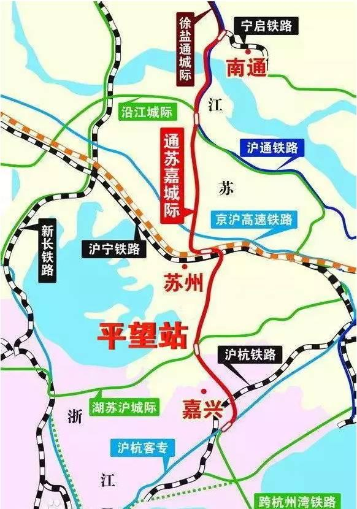
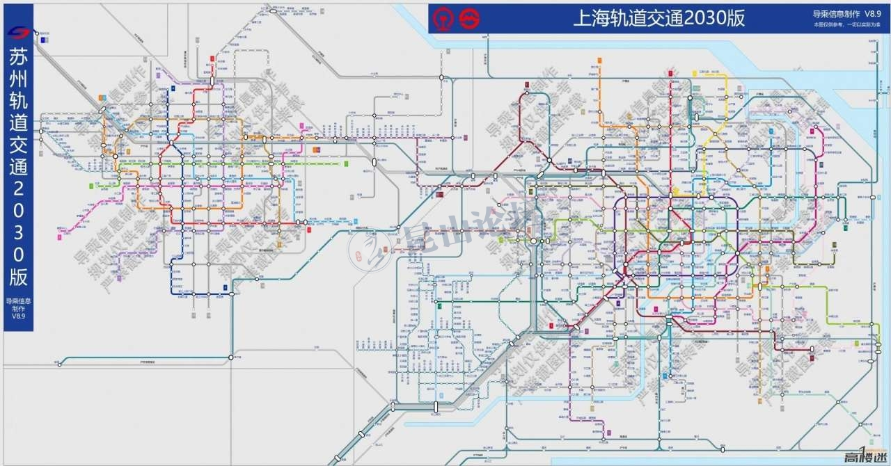
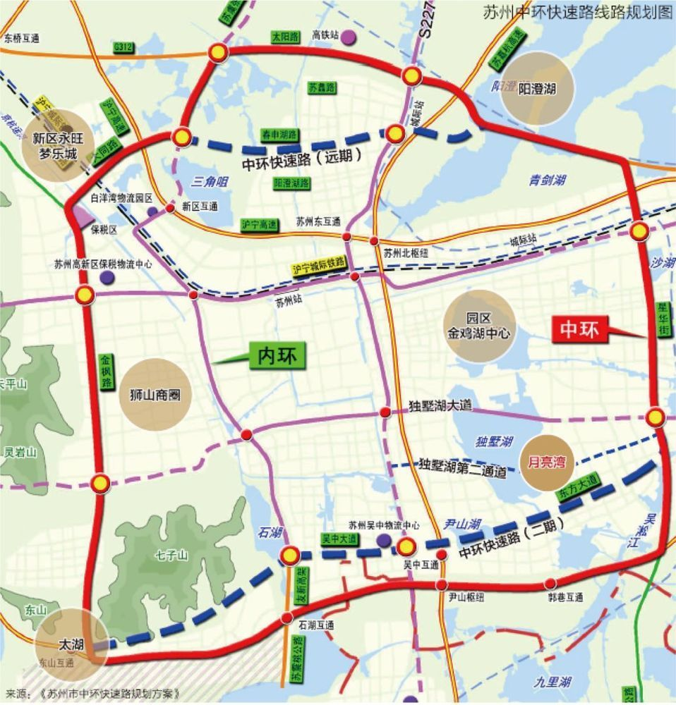

主页
1.1.
前言
1.2.
苏州
1.2.1.
交通
1.2.2.
经济
1.3.
工业园区
1.3.1.
总体规划
1.3.1.1.
总体规划2012-2030
1.3.1.2.
苏州新城发展战略
1.3.2.
社区
1.3.3.
经济
1.3.4.
交通
1.4.
环金鸡湖及独墅湖
1.4.1.
环金鸡湖
1.4.1.1.
历史概况
1.4.1.2.
规划历程
1.4.1.3.
用地布局
1.4.1.4.
交通结构
1.4.1.5.
景观空间
1.4.1.6.
重要节点
1.4.2.
环独墅湖
1.5.
苏州自贸区
1.6.
独墅湖高教区
1.7.
桑田岛
1.8.
附录
1.8.1.
参考资料
本书使用 GitBook 发布
交通
苏州的交通
通苏嘉城际铁路

地铁
上海,苏州地铁2030规划图

中环
苏州市中环快速路规划方案

results matching "
"
No results matching "
"